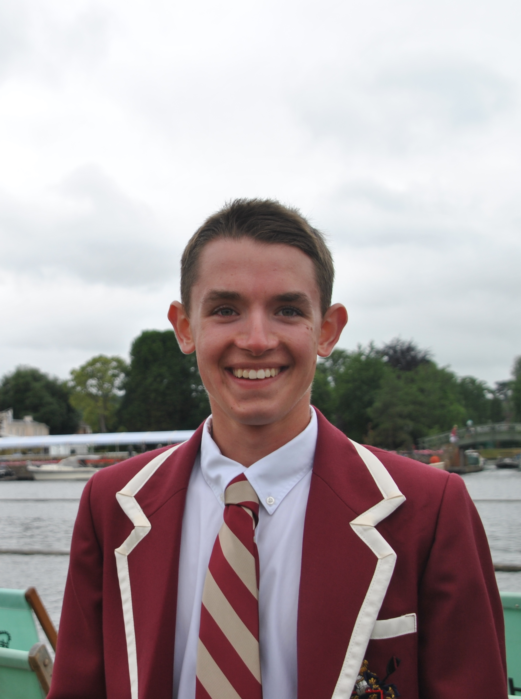

100 YEARS OF TABOR ACADEMY CREW
Documentary to premiere at Tabor Academy on May 20, 2018.
WATCH TRAILER
ATTEND PREMIERE
WATCH THE FILM
SYNOPSIS
For one hundred years, Tabor Academy has produced thousands of oarsmen on the shores of
Sippican Harbor. As one of the first high schools to establish a formal rowing program, Tabor has
long been a forerunner in the sport. Tabor has been well-known internationally for most of its
existence, regularly finding success in regional, national, and international regattas. Although many
aspects of the sport have changed, the commitment to excellence both on the water and in one’s
personal life within the Tabor Academy Rowing community has remained intact. Using a
combination of the extensive collection of historical Tabor rowing materials from the Tabor
Archives — print, photographic, video and memorabilia — and newly collected footage, including
video interviews with living individuals who played key roles in the history of Tabor rowing, we
hope to tell the fascinating history of Tabor Academy Crew in a dynamic, compelling manner for
the first time.
PREMIERE
Join Head of School John Quirk, and the Tabor Academy Crew Coaching Staff for an evening celebration one-hundred years of crew at Tabor Academy. The main event of the evening will be the premiere screening of "100 Years of Tabor Crew," a documentary produced and directed by Jack Gordon'17. The screening will be followed by a Q & A and conversations with those that made this celebration possible. We will have an extensive archival display courtsey of Tabor Archivist Sophie Arnfield. Come to learn more about Tabor's rich history and engage in coversation with friends, alums, and current members of the Tabor community.
When /
Sunday,
May 20
5 PM
Where /
Hoyt Hall
Tabor Academy
Marion, MA
Cost /
Free &
Open to
the Public
Refreshments provided. Doors open 1 hour prior to screening.
Click for More Info
Parking /
Parking is available at Hoyt Hall:
232 Front St
Marion, MA
02738
Running Time /
The film runs approximately sixty-five minutes long.
Dress Code /
The dress code is casual neat. Please use your digression. If you have Tabor Crew gear, you are welcome to wear it.
Livestream /
For those who cannot attend, a livestream will be available to watch & participate live. Details to follow.
Schedule /
4:00 PM — Doors Open
5:00 PM — Welcome
Jack Gordon '17, Head of School John Quirk
5:10 PM — Screening
"100 Years of Tabor Academy Crew" Documentary
6:15 PM — Making the Film
Jack Gordon '17
6:35 PM — Question & Answer
Jack Gordon '17
6:50 PM — Conversation
FILMMAKER

Jack Gordon '17
Jack Gordon graduated from Tabor Academy in 2017. Throughout his four years at Tabor, he was a coxswain for the Boy's Varsity rowing team. While at Tabor, Jack coxed the varsity at the New England Championships, Head of the Charles Regatta, and the Henley Royal Regatta. Now, Jack is a freshman at the University of California, Berkeley and a member of Cal's Men's Varsity Crew. This is Jack's first documentary and first feature-length film.
DONATE
Please consider donating to directly benefit the boys and girls of the Tabor Academy Crew program and provide the best resources possible to ensure another one-hundred years of success.
Donate using one of the following buttons:
Checks payable to “Tabor Academy” may be mailed to:
Tabor Academy
Advancement Office
66 Spring Street
Marion, MA 02738
Tabor accepts American Express, Discover, MasterCard, and Visa. Donors can provide credit card information on Tabor’s secure online giving form.
If you would like to allocate your donation towards a specific purchase for the program (i.e. a new racing shell), you have questions, or need assistance completing your gift, please contact a member of the Advancement Office at 508.291.8500.